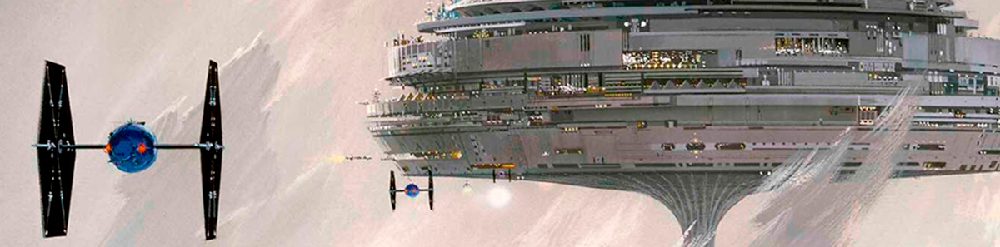

Through Light and Darkness: A Star Wars Narrative Design Proposal
"A comprehensive 24-page Narrative Design Document exploring a dual-route
story structure, original characters, and deep world-building within the Star
Wars 'Dark Times' era."

As a lifelong Star Wars enthusiast, I have always been fascinated by the
stories that exist beyond the main cinematic saga. This universe offers a
rich, often unexplored tapestry of themes and cultures that I wanted to
delve into. This project is my tribute to that expanded lore.
My goal was to craft a compelling, dual-path narrative set within
the
'Star Wars' universe during the Dark Times. The biggest challenge was
creating
a story where two protagonists, Aen-Sui and Kay, start from the same point
but evolve into polar opposites. I also had to ensure that both the 'Light' and
'Dark' routes felt emotionally earned and present a dramatic moral dilemma in
the last chapter.
-
Dual-Perspective Architecture: Designed a three-act structure where
the second act splits into two intertwined routes (A and B). This allows the
player to experience the same events from opposing viewpoints—the fugitive
and the Inquisitor—before converging in the final act.
-
Systemic Narrative Design: Integrated gameplay tutorials (stealth,
Force powers, and lightsaber duels) directly into the story beats to ensure
a seamless transition between narrative and action.
-
Combat Styles as Characterization: I defined unique combat forms
for each character based on their lore. For example, Maka’s style is
inspired by the “Verdadera Destreza” (Spanish fencing), while Kay
uses the dishonorable Trakata technique to reflect his fall to the Dark
Side.
-
Branching Narrative Logic: I mastered the complexity of managing a
story that splits and merges, ensuring that the 'True Ending' only feels
complete after the player has seen both sides of the conflict.
-
Tone Management within an IP: Learned how to respect the
established Star Wars canon while introducing original planets, characters,
and high-stakes drama that feels authentic to the franchise.
-
Production-Ready Documentation: I learned how to condense a massive
galactic setting into a highly readable document that bridges the gap
between storytelling and production. By including specific breakdowns of
requirements (such as a definitive list of planets, locations, etc.) I
provide a clear roadmap of the technical scope needed to bring the vision to
life.